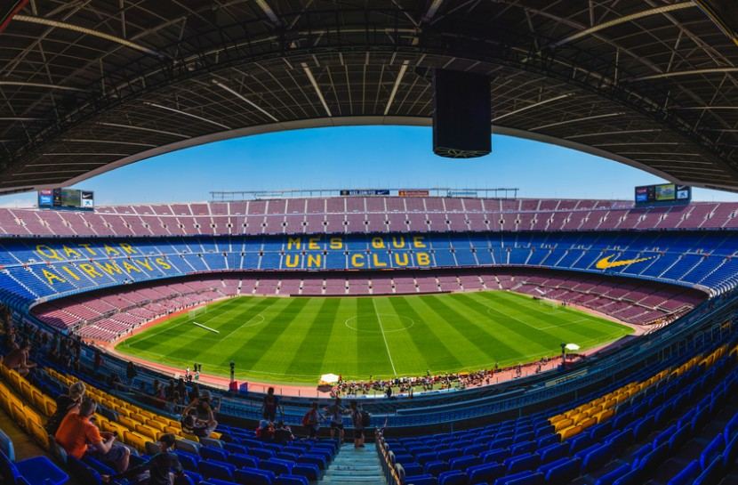

Klub sepakbola raksasa dunia yang bermarkas di kota Barcelona, Spanyol
Pengenalan
Klub sepakbola yang berdiri tahun 1899 ini dikenal dengan permainan bola-bola pendek, yakni tiki-taka, yang diperkenalkan oleh Johan Cruyff, seorang yang pernah bermain dan juga melatih klub Barcelona. Mempunyai akademi yang banyak menciptakan pemain-pemain bintang, yang dinamai La Masia. Dan pendukung nya disebut cules.
Masa kejayaan Barcelona secara gelar maupun permainan ada pada saat ditukangi juru taktik Pep Guardiola (tahun 2008-2012). banyak pemain asal la masia yang bersinar pada masa itu, seperti Lionel messi, Andres Iniesta, Xavi, Puyol, Valdes.
Stadion

Camp nou adalah markas klub sepakbola Barcelona. Bangunan yang berdiri pada tahun 1957 ini memiliki kapasitas penonton sebanyak 90.000 –an. Di tribun penonton terdapat tulisan motto klub yang bertuliskan Més que un club yang memiliki arti lebih dari sebuah klub.
Prestasi
Pada tahun 2009 barcelona menjadi klub pertama di dunia yang memenangkan sextuples, yaitu 6 gelar dalam 1 musim, Saat itu Barcelona ditukangi oleh juru taktik Pep Guardiola.
Gelar FC Barcelona:
Tipe
Kompetisi
Gelar
Domestik
La liga
26
Copa del rey
30
Eropa
UEFA champions league
5
Dunia
FIFA club world cup
3
Klik agar barcelona juara liga, europa league, dan cdr musim ini